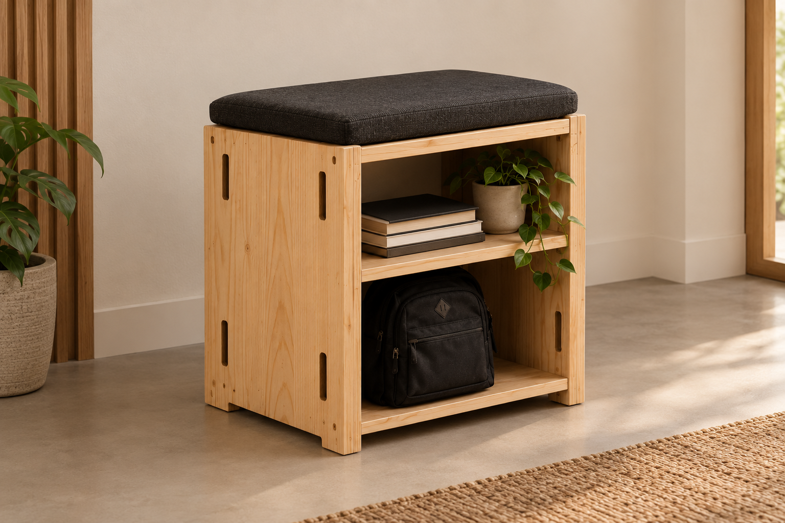
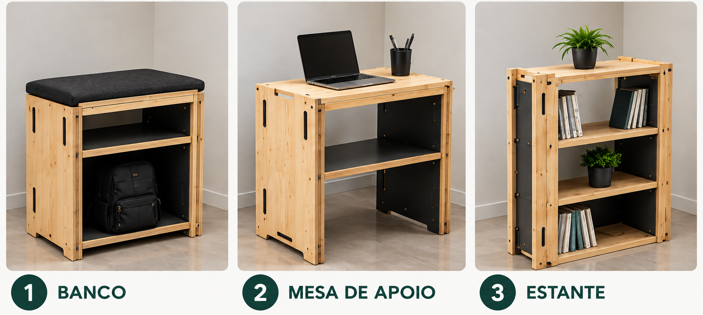
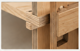

Um móvel que une
função, conexão e praticidade.
Bom dia! Nós somos a equipe NÔMADES responsável pelo projeto VIVA, um móvel modular e multifuncional desenvolvido a partir do tema “Conexões”.
Nossa proposta surgiu pensando em uma questão simples: por que ter vários móveis diferentes quando podemos ter um único móvel que se adapta a diferentes necessidades?
Conheça o projeto ↓
O desafio
do projeto.
Como projetar um móvel resistente, seguro, funcional e esteticamente atrativo, utilizando sistemas de encaixe que facilitem sua montagem, manutenção e transporte, reduzindo o desperdício e o impacto ambiental?
Esse foi o desafio que orientou o desenvolvimento do VIVA, buscando unir resistência, segurança, funcionalidade, estética, praticidade e sustentabilidade em um único móvel.
Resistência +
Praticidade
Criar um móvel resistente, seguro, funcional e atrativo, utilizando encaixes que facilitem sua montagem, manutenção e transporte.
O problema identificado
Durante o desenvolvimento do projeto, percebemos que muitas pessoas, principalmente aquelas que utilizam espaços menores, precisam de móveis que sejam práticos, compactos e versáteis.
Além disso, móveis tradicionais podem ser difíceis de transportar, desmontar, adaptar ou reaproveitar.
Público-alvo
O nosso público-alvo inclui principalmente estudantes, jovens, famílias e pessoas que utilizam espaços pequenos.
Onde utilizar
O VIVA pode ser utilizado em quartos, salas, espaços de estudo, escritórios e outros ambientes compactos.
Conheça o
VIVA.
Foi assim que surgiu o VIVA.
Ele é um móvel modular que pode assumir três funções diferentes: banco, mesa de apoio e estante.
Em vez de possuir uma única finalidade, o mesmo conjunto de peças pode ser reorganizado para atender diferentes usos.
A ideia é que o usuário consiga adaptar o móvel de acordo com a situação e com a necessidade do momento.
Um móvel.
Três funções.
O VIVA acompanha diferentes necessidades sem precisar de três móveis separados.
Um conjunto de peças,
três possibilidades.
Banco
Na primeira configuração, temos o banco, que pode ser utilizado para sentar em diferentes ambientes.
Mesa de apoio
Na segunda configuração, temos a mesa de apoio, que pode servir para estudar, trabalhar ou apoiar livros, materiais e outros objetos.
Estante
Na terceira configuração, temos a estante, que permite organizar livros, materiais escolares, objetos pessoais e itens decorativos.

O encaixe que
faz tudo acontecer.
E é justamente aqui que entra o tema “Conexões”.
As peças do VIVA são conectadas por meio de um sistema de pinos e travas, permitindo montar, desmontar e reorganizar o móvel.
A conexão não acontece apenas entre as peças. Ela também representa a conexão entre funcionalidade, praticidade, sustentabilidade e inovação.

Materiais pensados
para durar.
MDF 15 mm
A estrutura utiliza principalmente MDF de 15 milímetros, buscando resistência e estabilidade.
MDF 6 mm
As prateleiras utilizam MDF de 6 milímetros, mantendo uma estrutura funcional e acessível.
Pinos e assento
Também utilizamos pinos de madeira no sistema de encaixe. Para o assento, pode ser utilizada espuma D28 com revestimento em tecido sintético.
Pensando no futuro
do produto.
A sustentabilidade também é uma parte importante do projeto.
Como o VIVA pode ser desmontado, suas peças podem ser reutilizadas, substituídas ou adaptadas, evitando que todo o móvel precise ser descartado quando uma parte apresentar algum problema.
Isso contribui para reduzir o desperdício de materiais e aumentar a vida útil do produto.
ODS 12 +
ODS 11
O projeto se relaciona principalmente ao ODS 12 — Consumo e Produção Responsáveis e também ao ODS 11 — Cidades e Comunidades Sustentáveis.
O ODS 11 visa tornar cidades e comunidades humanas inclusivas, seguras, resilientes e sustentáveis. O ODS 12 promove o consumo e a produção responsáveis.
Da ideia
à realidade.
Protótipo
Para representar a proposta, desenvolvemos um protótipo funcional do móvel.
Medidas
O projeto possui aproximadamente:
80 cm de altura
60 cm de largura
35 cm de profundidade
Objetivo
O objetivo do protótipo é demonstrar como as peças podem ser conectadas e como o móvel pode assumir suas diferentes funções.
O projeto
em imagens.
Feito por pessoas,
pensado para pessoas.
Projeto desenvolvido por: